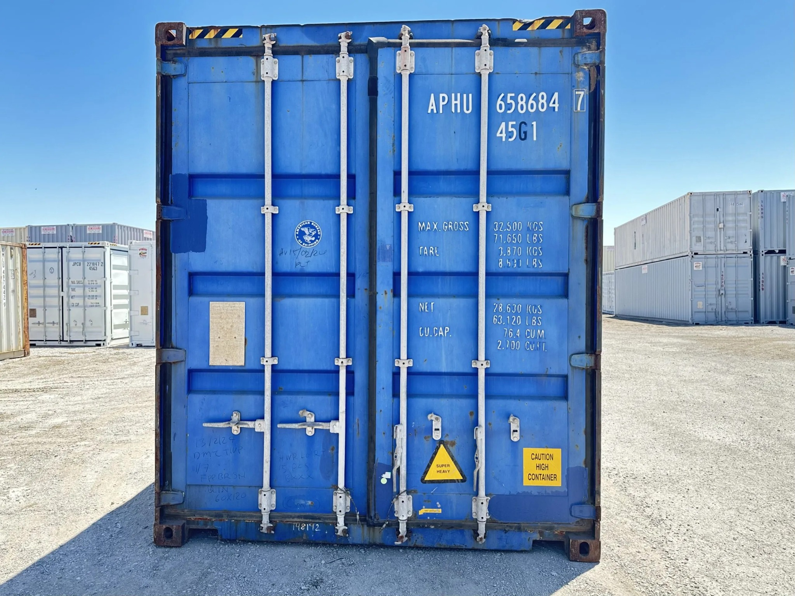

Check digit valid. One character is hard to read. Also possible: APRU 658684 7
4 door markings can't be read from this photo: max gross, tare, payload and cubic capacity. A closer photo of the door plate may help.
| Where | CEDEX | Severity | Certainty | |
|---|---|---|---|---|
| Door panels 5 findings · surface wear | ||||
| 1 | Left door leaf, middle third | DX12 | Cosmetic | Likely |
| 2 | Left door leaf, bottom third | DB12 | Cosmetic | Confident |
| 3 | Right door leaf, top third | DT34 | Cosmetic | Likely |
| 4 | Right door leaf, middle third | DX34 · CO | Cosmetic | Confident |
| 5 | Right door leaf, bottom third | DB34 · CO | Cosmetic | Confident |
| Door header and sill 2 findings · surface wear | ||||
| 6 | Door header | DH14 · CO | Cosmetic | Uncertain |
| 7 | Door sill | DG14 · CO | Cosmetic | Confident |
| Right side sheet 2 findings · surface wear | ||||
| 8 | Sections 5 and 6 of 10, lower half | RB56 · CO | Cosmetic | Likely |
| 9 | Sections 7 and 8 of 10, lower half | RB78 · CO | Cosmetic | Likely |
Mock-up. Values are from the recorded "Rear doors with markings" sample; outlines and pins on the photo are placed by hand to show the idea.